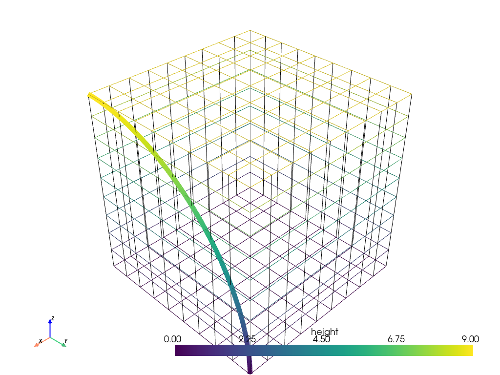

sample_over_circular_arc#
- DataSetFilters.sample_over_circular_arc(pointa, pointb, center, resolution=None, tolerance=None, progress_bar=False)[ソース]#
円弧上のデータセットをサンプリングします．
- パラメータ
- pointanp.ndarray または python:list
[x, y, z]内の位置．- pointbnp.ndarray または python:list
[x, y, z]内の位置．- centernp.ndarray または python:list
[x, y, z]内の位置．- resolution
int,optional 円弧を分割する断片の数．デフォルトは入力メッシュ内のセル数です．正の整数でなければなりません．
- tolerance
float,optional ソース内のポイントが入力のセル内にあるかどうかを計算するために使用される許容値です．指定しない場合，公差は自動的に生成されます．
- progress_barbool,
optional 進行状況を示す進行状況バーを表示します．
- 戻り値
pyvista.PolyDataサンプリングされたデータを含む円弧．
例
円弧上のデータセットをサンプリングし，プロットします．
>>> import pyvista >>> from pyvista import examples >>> uniform = examples.load_uniform() >>> uniform["height"] = uniform.points[:, 2] >>> pointa = [uniform.bounds[1], uniform.bounds[2], uniform.bounds[5]] >>> pointb = [uniform.bounds[1], uniform.bounds[3], uniform.bounds[4]] >>> center = [uniform.bounds[1], uniform.bounds[2], uniform.bounds[4]] >>> sampled_arc = uniform.sample_over_circular_arc(pointa, pointb, center) >>> pl = pyvista.Plotter() >>> _ = pl.add_mesh(uniform, style='wireframe') >>> _ = pl.add_mesh(sampled_arc, line_width=10) >>> pl.show_axes() >>> pl.show()
